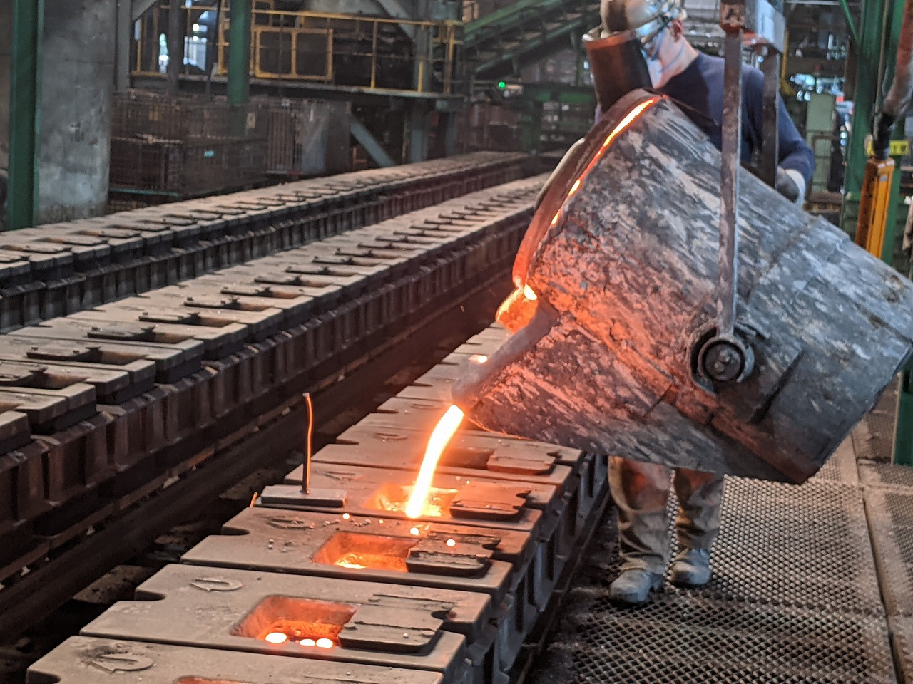
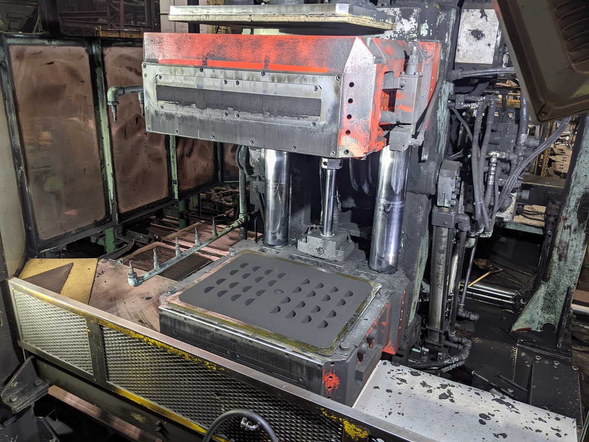

福山鋳造株式会社
本社 〒720-0815 広島県福山市野上町1-9-9工場 〒714-0048 岡山県笠岡市緑町3-2
TEL 0865-67-1221 ／ FAX 0865-67-4629
資本金 1,000万円／会社設立 1985年10月／従業員 100人
業務内容 銑鉄鋳物製造業 代表取締役 小林 貞之
鋳物のご相談で最初に決まるのは材質と重量です。公開している24点の実績を材質ごとにまとめ、1本の対数目盛の上に重ねました。0.5kg から 50kg まで、材質を問わず覆えています。
目盛は 0.4kg 〜 60kg の対数目盛です。帯の位置と長さは、現行サイトに掲載されている実績24点の実重量から計算しています。この範囲外もご相談ください ── 掲載は実績の一部です。
450t／月
鋳鉄品の生産能力
5t ×2基
中周波誘導電気炉（2,800KW）
9台
シェル中子造型機
自動車部品と建設機械部品が中心です。現行サイトでは画像の格子に並んでいた24点を、材質と重量で並べ替えました。
| 製品 | 英名 | 材質 | 重量 | 分野 |
|---|---|---|---|---|
| シフトフォーク | Shift Fork | FCD500 | 0.5 kg | 自動車 |
| スクリュー | Screw | FCD400 | 0.8 kg | 自動車 |
| ロッカーブラケット | Locker Bracket | FCD450 | 0.9 kg | 自動車 |
| アーム | Arm | FCD700 | 1.2 kg | 自動車 |
| サイドベアリングキャップ | Side Bearing Cap | FCD400 | 1.5 kg | 自動車 |
| コンパニオン | Companion | FCD700 | 1.8 kg | 自動車 |
| ケーシング | Casing | FCV350 | 2 kg | 建設機械 |
| ベアリングリテーナー | Bearing Retainer | FCD500 | 3.5 kg | 自動車 |
| ケーシング | Casing | FCV350 | 5 kg | 建設機械 |
| ヨークフランジ | Yoke Flange | FCD700 | 5.7 kg | 自動車 |
| ボディー | Body | FC250 | 6 kg | 建設機械 |
| コンパニオン | Companion | FCD700 | 7 kg | 自動車 |
| ステーターシャフト | Stator Shaft | FCD450 | 7 kg | 建設機械 |
| ベアリングキャップ | Bearing Cap | FCD500 | 10 kg | 自動車 |
| ベアリングハウジング | Bearing Housing | FC250 | 10 kg | 自動車 |
| サーモスタットケース | Thermostat Case | FC250 | 11 kg | 建設機械 |
| スリーブヨーク | Sleeve Yoke | FCD700 | 15 kg | 建設機械 |
| バルブボディー | Valve Body | FCD500 | 15 kg | 建設機械 |
| ギヤポンプケース | Gear Pump Case | FC250 | 15 kg | 建設機械 |
| ブラケット | Bracket | FCD450 | 17 kg | 建設機械 |
| ハウジング | Housing | FC250 | 24 kg | 建設機械 |
| ハブ | Hub | FCD450 | 27 kg | 建設機械 |
| プーリー | Pulley | FCD450 | 35 kg | 自動車 |
| ハブドラム | Hub Drum | FC250 | 50 kg | 建設機械 |
溶解から仕上げ、検査までを1つの工場で行っています。敷地面積 約13,000㎡、建築面積 約8,000㎡。
溶解
中周波誘導電気炉 5t（2,800KW）
2基
砂処理
アイリッヒミキサー
60t／H
造型
AVS-4型 自動造型ライン（600×800×200/200）
1系統
AMF-Ⅳ型 自動造型ライン（450×550×200/200）
1系統
中子
中子ライン（アルカリフェノール・CO2硬化）
2基
シェルマシン #300×4／#400×3／#500×1／#600×1
9台
仕上げ
クーリングドラムライン
—
ゲートペッカー堰折機
3基
ショットブラスト
4基
バリンダー（コヤマ製）
2基
ノズルショット
1基
検査・試験
発光分光分析装置／CEメーター
各1
球状化率判定装置（音速式）／黒鉛球状化測定ソフト
各1
金属顕微鏡／ブリネル硬度計
各1
3Dスキャナー（キーエンス VL-370）
1基
超音波探傷機
1基
その他
4tカバー型熱処理炉
2基
小型3Dプリンター（FDM式）
1基
3D CAD（SolidWorks）／鋳造シミュレーション（JSCAST）
—


1918年11月
豊島区東池袋に旭出工場を創業。
1974年7月
川越工場を建設し池袋工場より移転。能力増強のため AVS-4型 を新設。
1992年4月
砂処理設備（アイリッヒ）を新設。1995年8月 AMF-Ⅳ型 に更新。
2006年6月
福山鋳造株式会社が引継ぎ、再スタート。
2010年3月・12月
中周波電気炉を導入。同年12月 発光分光分析装置を更新。
2011年12月
球状化率判定装置（音速式）を導入。2012年3月 コヤマ製バリンダーを増設。
2014年1月
カバー型熱処理炉を導入。
2018年7月・10月
シェル中子造型機を増設し計9台の稼働を開始。同年10月 3D CAD（SolidWorks）と鋳造シミュレーションを導入。
2019年4月
3Dスキャナーとドライアイスブラストを導入。
2020年12月
小型3Dプリンタ（FDM式）を導入。
2021年6月
黒鉛球状化測定ソフトと超音波探傷機を導入。
材質・重量・数量が決まっていなくてもご相談ください。鋳造シミュレーションでの検討からお手伝いできます。
FC（ねずみ鋳鉄）、FCD（球状黒鉛鋳鉄）、FCV（CV黒鉛鋳鉄）のどれでも対応します。掲載している実績の材質は FC250、FCD400、FCD450、FCD500、FCD700、FCV350 です。
公開している実績は 0.5kg（シフトフォーク／FCD500）から 50kg（ハブドラム／FC250）までです。造型ラインは AVS-4型（600×800×200/200）と AMF-Ⅳ型（450×550×200/200）の2系統で、小型・中型の鋳物を得意としています。生産能力は鋳鉄品で450t／月です。
球状化率判定装置（音速式）を2011年12月に導入し、2021年6月には黒鉛球状化測定ソフトを導入しました。あわせて発光分光分析装置、CEメーター、金属顕微鏡、ブリネル硬度計で管理しています。2021年6月には超音波探傷機も導入しました。
2018年10月に鋳造シミュレーション（JSCAST）と3D CAD（SolidWorks）を導入しました。2019年4月に3Dスキャナー（キーエンス VL-370）、2020年12月に小型3Dプリンター（FDM式）を導入しており、形状の検討から検証まで社内で行えます。
アルカリフェノール・CO2硬化の中子ラインを2基備えるほか、シェルマシンを9台（#300を4台、#400を3台、#500を1台、#600を1台）保有しています。シェル中子造型機は2018年7月に増設し、計9台の稼働を開始しました。
4tカバー型熱処理炉を2基保有しています（2014年1月導入）。